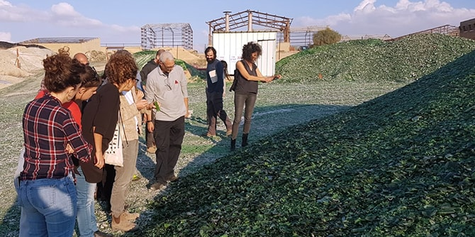
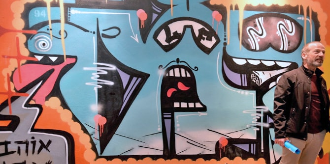
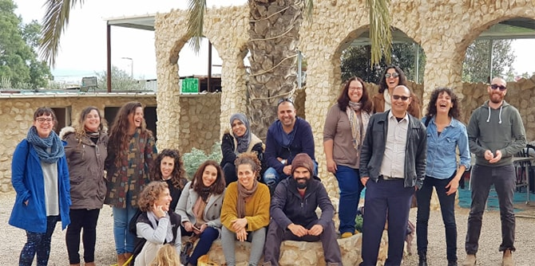

As part of an in-depth learning process provided by a curricular unit on “Place and Society,” led by faculty members Dr. Rotem Bresler-Gonen and Professor Dana Arieli, fellows of the Mandel Program for Cultural Leadership in the Negev participated in study tours to a range of locales throughout the Negev. As part of this study unit, fellows engaged in clarifying the characteristics of art and culture in the Negev, through encounters with artists and cultural leaders in Jewish and Arab communities, and by learning about the challenges these individuals face in developing art and culture on a local and regional basis. The study tours introduced the fellows to inspirational figures working to promote cultural initiatives that reflect the unique cultures of the places in which they work.
The study tour that launched the “Place and Society” study unit was a visit to the Beer Sheva Agricultural Farm, which was led by
Maskit Hodesman, a graduate of Cohort 2 of the Mandel Program for Regional Leadership in Beer Sheva. The fellows experienced the Farm’s “therapeutic kitchen” and learned about food in its cultural, social, psychological, and sociological contexts. They also explored the connections that food can make between different cultures and communities, and the ways in which food can help clarify identity, reflect tradition, and bring back memories.

Some of the study tours focused on in-depth exploration of the fellows’ fields of practice, including discussions of ways in which their work on behalf of Negev residents could be improved. Sites visited by the fellows included the Design Terminal in Yeruham, which is home to one of the nonprofits of the fellows in the program, and the local beit midrash. They also visited the Phoenicia Glass Works factory in the town, and learned about local art and design inspired by it. Their visit to the factory was led by
Shimon Ben Zaken, a graduate of the Mandel Program for Local Leadership in Yeruham and Ramat Hanegev. The fellows also visited an art exhibition in Omer called “The House in Dafna,” which was created by another fellow of the program.

Phoenicia Glassworks, Yeruham
During a study tour of Beer Sheva, led by the architect
Omri Oz, the fellows saw examples of brutalist architecture and its impact on the city. They also visited the exhibition “Dreams in Concrete” at the Negev Museum of Art, where they were guided by the photographer
Eli Singalovski. On another study trip, which was planned by the fellows themselves and led by faculty member
Dr. Itzhak (Kiki) Aharonovich, the group learned about urbanism and about the “bubbles” that can be found in Beer Sheva. As part of this tour, the fellows visited Beer Sheva’s neighborhoods, hi-tech industrial area, and Old City.
 “Free Hand,” Graffiti Exhibition, Center for Young Adults, Beer Sheva
A study tour of the Arab towns of Rahat and Lakiya, led by one of the fellows, introduced the group to the flourishing arts and culture scene in these locales, as well as to the complex challenges involved in promoting art and culture in a traditional society. The fellows met with
Oren Nevo and
Sondos Alhuzail, entrepreneurs who are leading a photography project for youth in Rahat;
Talal Abu Saed, a graduate of Cohort 1 of the Mandel Program for Local Leadership in Rahat, who told them about the “Desert Magic” festival in Lakiya; and
Amal Abu Karen, director of the Huriya Palace center for Bedouin crafts and culture. They were also given a tour of the “Three and One-Third Days” exhibition at the Joe Alon Museum of Bedouin Culture by curator
Liat Yehuda.

Participants of the program visit Lakiya
{kind=link}
{kind=link}
{kind=link}